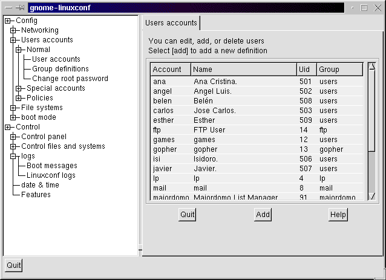

adduser carlos.
Habrás creado un usuario sin clave de acceso, y escribiendo al inicio de Linux en login el nombre carlos, entrarás en TU SESIÓN.
NOTA
(Si no existiera la sentencia "adduser", o "useradd", pudiera ser porque
tienes "linuxconf" instalado, escribe linuxconf, que es un frontend (entorno
amigable o entorno final) muy cómodo para gestionar todo linux,
entre ellos la creación de usuarios.)
FIN NOTA
De esta forma crearemos un usuario con las características por
defecto, que suelen ser las mejores, pero para crear un usuario a nuestra
medida, también podemos escribir:
(Forma general)
[root@Wakitaki /root]# adduser -u 500 -g users carlos
[root@Wakitaki /root]# passwd carlos
(y asignamos la clave para carlos)
[root@Wakitaki /root]# adduser -u 501 -g users javier
[root@Wakitaki /root]# passwd javier
(y asignamos la clave para javier)
o también:
[root@Wakitaki /root]# adduser -u 500 -g 100 -p 123 -r carlos.
También, es MUY probable que tengas que editar además el fichero /etc/shadow, para activar la cuenta: (al que le pasará algo parecido)
Ej.:
# fichero: /etc/passwd (DESPUÉS de la modificación)
carlos::501:100:carlos orovengua:/home/carlos:/bin/bash
# fichero: /etc/shadow (DESPUÉS de la modificación)
carlos::10745::99999::::
Escribiremos:
cd /etc
joe passwd
joe shadow
o bien:
joe /etc/passwd.
joe /etc/shadow
En este fichero hemos incluido su estructura:
passwd
donde nos preguntará por la vieja, la nueva y que la verifiquemos.
Si no te acuerdas, o cualquier usuario no se acuerda de su password, root, deberá encargarse de editar el fichero /etc/passwd y suprimir la línea donde aparece la clave:
javier:ClaveOlvidada:...
Para quedar:
javier::...
"userdel" y el nombre del usuario, ejemplo.:
userdel carlos
También, se podrá editar el fichero passwd y quitar la línea entera donde aparece el nombre del usuario en cuestión, y después borraremos su directorio de /home. (también conocido como directorio raíz de cada usuario)
De todas formas es conveniente hacerlo con el comando userdel, o desde X-Window en su defecto, ya que también se eliminará el directorio "carlos" del directorio "home", ya que si no, como root, deberás borrar el directorio del usuario eliminado.
NOTA IMPORTANTE:
